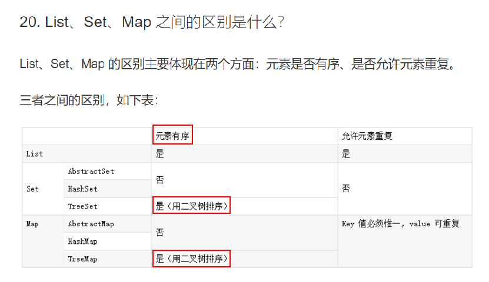

最近在整理Java基础知识的面试题，看到了一个题目的答案不够准确，这里跟大家分享一下。
一、面试题的小错误

对于TreeSet和TreeMap来说，元素应该是无序（指元素的存取）而不是有序的，而在表中它可能想表达的是可以排序，不够严谨，严格来讲
元素的有序≠可以排序。元素的存取有序和排序本质上应该是两码事，不应该混为一听。
二、元素的有序和无序
下面具体来讲讲，集合中元素的存取有序的问题。
众所周知，List的特点： ①元素可重复 ②元素是有序的
相对地，Set的特点是： ①元素唯一 ②元素是无序的
首先，我们来明确这里的有序/无序的准确定义。
有序是指元素的存取顺序是一致的，即你以什么顺序将元素存入List，比如1，3，4，13，那么取（遍历）出来的顺序也是1，3，4，13。
无序是指元素的存取顺序是不一致的（这里注意，事实上会有小概率可能，你可能碰巧发现你的set中元素的存取顺序很巧合地一致了，不符合这个定义了，那么set中的元素究竟是不是一致的呢？我们下面会讲解）
三、具体例子
①List
List中元素的存取是有序的，有序很好理解，比如一个数组arr（以ArrayList为例）,该数组的输出顺序是跟你存入(add)的顺序是一致的，为 15 , 2, 3, 9。
import java.util.ArrayList;
import java.util.List;
public class Test {
public static void main(String[] args) {
List<Integer> arr=new ArrayList();
arr.add(15);
arr.add(2);
arr.add(3);
arr.add(9);
for(int a:arr) {
System.out.println(a);
}
// 输出结果 15 2 3 9
//arraylist的元素存取是有序的
}
}②Set
import java.util.HashSet;
import java.util.Set;
public class Test {
public static void main(String[] args) {
Set<Integer> set=new HashSet();
set.add(122);
set.add(234);
set.add(2);
set.add(12);
for(Integer s:set) {
System.out.println(s+" "+s.hashCode());
}
// 输出为 2 122 234 12
//HashSet是元素无序的
}
}
Set中元素的存取是无序的。那么为什么会出现小概率的“有序”情况呢？
以HashSet来讲，HashSet的底层是Hash表，我们每次add元素进去后，每个元素将调用hashcode方法（匹配1个Hash函数）得到一个对应的hashcode值，然后根据这个hashcode值在hash表中对应的位置存入元素。举例来说,我们现在存的顺序是123，22，12，3。而取出来的时候是按照这些元素在Hash表中的真正的存储位置顺序(或者逆序或者某种规则)遍历，所以便会出现存取顺序不一致的情况。也就是说，Hash表内部的排序是根据hash值而不是add的先后顺序来排序的，而上面出现的特殊情况，也就是说正好你的元素的add顺序和它对应的Hash值在Hash表中的排列顺序刚好一致，让你感觉上好像变成有序了。其实，从Hash表的角度上来讲，HashSet中元素的存取并不是完全无序（随机）的，只不过它是按照自己的规则来存入和输出元素（Hash表中的Hash值的大小顺序）。
同理，对于TreeMap来说，其底层为红黑树。add元素的先后顺序并不重要，真正的存储顺序是按照二叉树的规则存储的，所以最后遍历都是自然排序后的输出。
四、总结
最后总结：从本质上讲，List和Set内元素有序/无序的核心区别
List的元素有序是因为它的底层是线性结构的数组（或者链表），元素的存取是和add的先后(时间)次序有关的——本质上与时间相关
Set的元素无序是因为它的底层是非线性结构的哈希表/二叉树，元素的存取是和add的先后(时间)顺序无关的——你先add还是后add，都是存在Hash表中的同一个位置/在二叉树中，无论你先add还是后add，最后都输出的是排序（默认自然排序）后的数组——本质上和时间无关